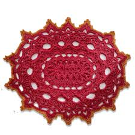
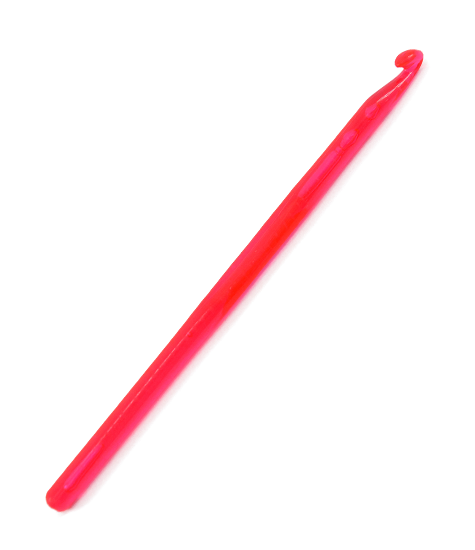
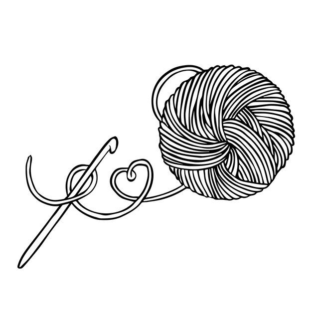

O que é crochê?
O termo vem do germânico croc e do francês crochet, que significam "agulha". É uma técnica de tricotado manual em que se usa uma agulha para formar correntes com fios. Linhas muito finas podem ser usadas com agulhas muito delicadas e fios grossos com agulhas igualmente grossas.
Agulhas
As agulhas são fabricadas em alumínio, aço, madeira, bambu e plástico. Em geral, para projetos com fios delicados e finos, é melhor usar as agulhas de metal que, além do mais, duram por toda a vida. Existem cerca de 25 tamanhos de agulha padronizados. Quando você compra um fio para tricotar, normalmente é informado qual número de agulha (ou agulhas) é ideal.
Fios 
No que respeita ao fio, pode-se usar praticamente qualquer tipo de material têxtil: desde fios para bordar, fios metálicos, lã e até tecidos que você pode preparar pessoalmente em projetos de upcycling e dar vida às roupas que não usa. Você pode consultar livros ou sites com padrões, nos quais encontrará uma explicação das abreviações usadas para cada ponto. Mas, o mais fácil é começar a se familiarizar com o manuseio da agulha.
Dica importante para quem está começando:
A numeração das agulhas de crochê varia de acordo com a espessura do fio utilizado e o tipo de ponto desejado. Geralmente, as agulhas mais finas são usadas para fios mais finos, como a linha Cléa ou Camila Fashion, enquantosão as mais grossas são usadas para fios mais grossos, como barbantes.
- Agulhas finisimas (0.5mm a 2.0mm)
- Agulhas mais finas (2.0mm a 3.0mm)
- Agulhas mais grossas (3.5mm a 10.0mm)
- Agulhas super grossas (10.0mm a 20.0mm)